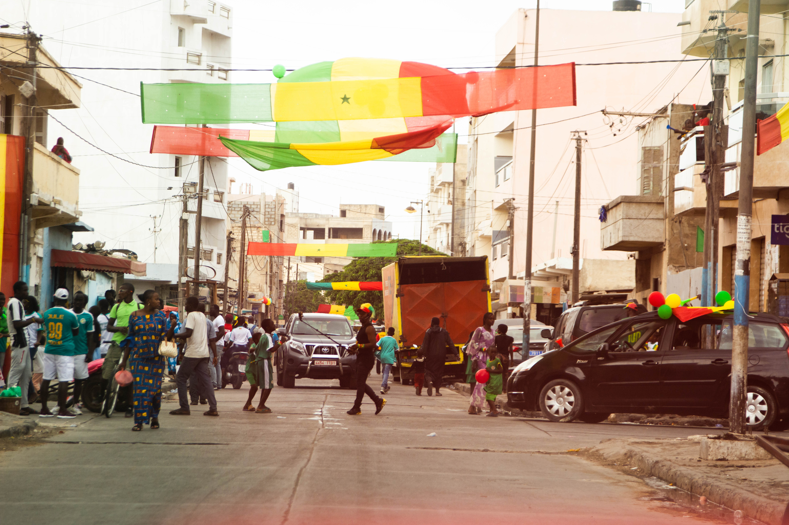
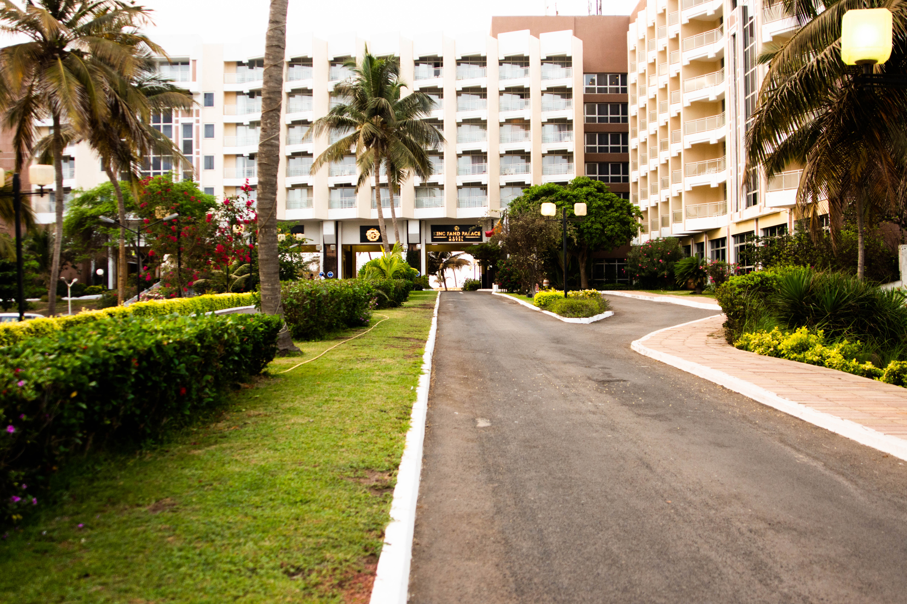

SecurityDaysCTF by Hexpresso, Grazzie Dakar !
Hi fellows,
It take again some time since we didn't gave you news. So here we are :)
More than one week ago, on Sunday 22, 2019, we arrived in Dakar for the SecurityDaysCTF that we were organizing !
That was just really incredible. We used to organize some CTF such as BreizhCTF but here it was very different ! Very different because we didn't knew anything about the west part of Africa and how they handle cybersecurity in their own ! So it was a big challenge for us.
3 weeks before many members of Hexpresso taking part deeply to this project :
- Notfound did a very awesome job with the platform and the monitoring
- kaluche gave us his deep and solid experience with BreizhCTF
- Bitk - Mitsu - XeR developped some great challanges
- Chaignc - Sakiir - SaxX did the trip to dakar to assist challengers and settle all the logistic part of the CTF
- SaxX coordinates all the stuff between locals contacts in Dakar and the remote team in France
All the participants were very happy for this first edition. They took a lot of pleasure and hard work to solve the designed challenges despite their complexity. The organizers of SecurityDays were very very happy too. It was the first time such a CTF event took place in Senegal.
The winners of the CTF is Pentesters team who did a great job. Hackin'team and Team SN01 finished at second and third places and could have managed to win the CTF !
We also met a lot of interesting people doing great stuffs and job in Senegal. We established contacts and we will for sure make some others competitions in this country. We also met others africans delegations which were very interesting by our profile and the way we can organized such competitions. They also gave us their contact and we have already begin some exchanges to organize other CTF in Africa.
Dakar is a really good, safe and pleasant city ! Their food is just incredible : yassa poulet - thiebou dieune and others. We also went to some lovely places to have drinks with an incredible seaview.
We will definitively came back again for work and others greats projects.
I would personnaly give a big thanks to my dears friends of Hexpresso who gave me their trust and follow me in this amazing experience : Bitk - Chaignc - Notfound - Mitsu - Kaluche - Sakiir - XeR. Also, gave a kudos to all people we have met in Dakar and all the coming projects.
Stay tuned dears fellows, we have more things coming.
We wish you all a very lovely summer and see you in September.
Very Kindest Regards,
SaxX
HepxressoTeam

Add a description of the image here

Add a description of the image here